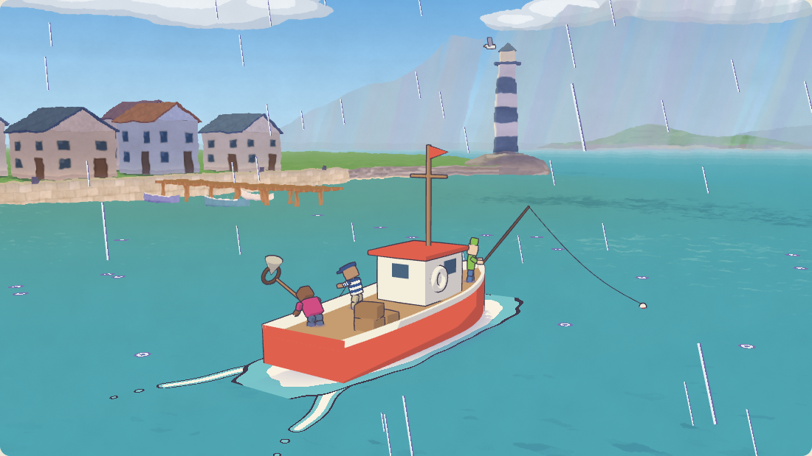

A holiday you keep in your pocket: a little boat, a crew that fishes for you, a painted sea that is always worth looking at, and other sailors drifting by to say hello.
Prototype GDD
UE5 · PC / Steam premium
Review: PASS at loop 2
10 docs · 34–37 / 40
Source: design/gdd/little-ocean/ 00–10 plus reviews/loop-1 and loop-2 · Last updated 2026-11-26 · This page is a condensed preview, not the source of truth.
Preview · look, vibe and HUD
Look and feel
A live painted-cel vignette rendered in the browser: painted sea, harbour and sky; inked boat, crew, buoy and effects. The sailing HUD from the UI screens below sits on top. It is a target for mood and readability, not a gameplay build, and values are approximate.
23/32
NE›
The Shallows
68
1Mabel2Pip3Tomo
New place seenTurtle RockJ
Drag to orbit. Look-and-vibe preview, not gameplay.
Static captures (in case WebGL is unavailable):
DayDusk

Drizzle
UI screens and HUD
Implementation mocks for the Little Ocean UMG pass. Every frame is authored at 1920×1080 and scaled to fit, so every px in the redlines is a 1080p px. Game UI keeps its own palette in light and dark site themes. Copy strings are final unless marked PROPOSED.
10 says "hex in 09", but 09 has none. Used #D02A45 from the painted-cel palette (confirm accent, never damage).
Hold-full copy
10 "Hold full — head home to sell", 01 "Hold's full — fishmonger's open whenever you are.", 04 "Hold full — crew's resting". HUD label = "Hold full" (10); FTUE bubble = 01 (FTUE owner); companion "Full" (08).
Crew state at the stall
04 calls the swell band NotInZone; 03 (zone owner) says Z_R1 runs to y 650 and the stall is at y ≈ 607. Mock follows 03: crew keep fishing at the stall.
Ping time left
06 asks for "remaining time"; 10 bans timers. Expiry shown by the ring thinning over the last 20 s, no number.
Panel sizes vs 28 px floor
Cargo bean 420 → 476 (fits "Hold full"), crew panel 760×420 → 760×480, journal 760×520 → 1280×744, companion cargo bar 260 → 172 (08's own bar budget sums to more than 512).
10 points to "mapping in doc 04", which 04 lacks. All prototype crew are 1.0 → "Steady hands".
Hold_3 "locked"
05 hides Hold_3 until Hold_2 is owned; the dashed locked row is shown as a spec state only.
Anchor on pad
02 says Y, 10's input map says B. Not shown in these mocks; needs a ruling.
0
UI kit
Tokens, type, poms, beans, glyphs and the crew dummy component every screen below is built from. All px are at the 1920×1080 reference; runtime scale S = clamp(ViewportHeight / 1080 × UserTextScale, 0.75, 2.0).
Colour tokens (game UI, never themed)
Aubergine Ink #33273B All text, 2 px outlines, focus ring
Paper Cream #FFF6E3 Panels (beans), pom text on dark
Cocoa #6B4A35 3 px frames, primary pom, bar fill
Shadow Wisteria #6E6AA8 Drop shadow, scrim, silhouettes (never grey)
Wisteria InkPROPOSED #57538C Secondary text, disabled label (5.7:1 on shade)
Paper ShadePROPOSED #F3E6C8 Bar track, zebra rows, disabled fill
Collar Crimson #D02A45 Confirm pom only (cream text 4.9:1)
Beacon Amber #FF9B21 Encounter ping + player marks only
Coral Hull #E8553F Player boat paint A; not a UI state colour
Lantern Yellow #F7CF4A Boat paint B; not a UI state colour
Redline #E0218A Annotation layer in these mocks only, not shipped
Type scale (one rounded sans, 2 weights)
Style
Size / weight
Use
Display
40 px / 600
Panel titles (Journal, Crew, Settings)
Title
32 px / 600
Names, totals, button labels, numerals (tabular)
Body
32 px / 500
Speech, settings labels, list rows
Small (floor)
28 px / 500 · 600
Secondary lines, HUD labels, hints, captions
Glyph
20–26 px / 600
Inside slot badges + keycaps only (icon, not running text)
Mock font: Fredoka 500/600 (stand-in for the doc 09 pick, M PLUS Rounded 1c, OFL). Fallback stack: Fredoka, M PLUS Rounded 1c, Nunito, Varela Round, system-ui. Line height 1.15. Ink on cream 13.6:1.
Poms, beans, pills, toggles, slider, input glyphs
ASell allBCloseAFitNeed 130 moreBuyBuyBuy
Panel bean
Opaque paper card. Body text 32/500, never below 28 px.
250 Whale pod 240 mFish 7/12Places 3/5OnOff
70−1.00×+EJF9EscABLBView
Icon set (inline SVG, 2–2.5 px ink line, flat fills)
Efficiency shown as words only; all prototype crew = 1.0 = "Steady hands"
Flavour (hover/focus line, not shown at rest): Mabel "Leans on the rail; coils rope when idle", Pip "Waves both arms at every passing boat", Tomo "Points an arm at whales and pings" (04)
Tomo appears with Crew_2 (D5); no hire scene in the prototype
Input
[C] opens/closes · (View) → Crew tab on pad · (B)/Esc closes
Focus moves row to row (D-pad ↑↓); no actions on rows
String
Copy
Source
crew.title
Crew
10
crew.count
{n} of 3 aboard
PROPOSED
crew.state
Fishing / Resting / Waiting
04
crew.eff.1_0
Steady hands
10
crew.locked.l1
Joins with Second Hand
10 ("comes with Crew_2")
crew.locked.l2
Shipwright · 90 Shells
05
crew.action
Hauls a hand-net over the rail · Long rod: bob and wait · Hand-line over the side
09
5
Discovery journal
A "seen" list of fish and places, never a checklist to grind: found entries are inked cels, unknown ones flat silhouettes.
12/32
NE›
The Shallows
86
1Mabel2Pip3Tomo
JournalLB Fish 7/12 Places 3/5RBJB
Sand Sprat
Harbour Mackerel
Blue Wrasse
Ribbon Eel
Sun Flounder
???
Swell Bream
Kelp Pollock
???
???
???
???
Sun FlounderThe Shallows UncommonFirst seen: voyage 1, 14 min inFlat as a plate and freckled like a sunny afternoon.
Places tab: same grid; entries = Gull Point Lighthouse, Wreck of the Marigold, Turtle Rock, Thunder Arch, Lantern Bell Buoy (03)
Bigger than 10's 760×520: the 12-species grid plus detail cannot hold 28 px names at that size
Rules
No prices, counts or completion % beyond "x/y" (P3)
Discovery reward = the entry itself (03)
Opening J during swell push-back is allowed (10)
String
Copy
Source
journal.title
Journal
10
journal.tab.fish
Fish {seen}/{total}
10 (total 12 per 04)
journal.tab.places
Places {seen}/{total}
10 / 03
journal.unknown
???
10
journal.firstseen
First seen: voyage {v}, {m} min in
PROPOSED
flavour.SunFlounder
Flat as a plate and freckled like a sunny afternoon.
PROPOSED
6
Swell gate telegraph (no Keel)
Show "not yet", never "game over": the swell is visible long before it is felt, and the stall gets one friendly line pointing at the shipwright.
18/32
N‹
The Shallows
120
1Mabel2Pip3Tomo
[ low surf roar ahead ]
Swell Buoys: inked crimson/cream cel, every 100 m along y = 500; bob grows with w; bells clank. Non-colliding.
North horizon slate-teal, low cloud, sea stacks + Thunder Arch in haze, drizzle curtain: visible from anywhere in R1.
Ambient caption (when on): surf roar fades in over the last 300 m (0 → −12 dB at y = 500).
A. Approach, y ≈ 450: buoy line ahead, R2 weather on the horizon, surf caption.
18/32
N‹
The Rolling Swells
120
1Mabel2Pip3Tomo
Mabel: Swell's too big for our keel, Cap'n. The shipwright could fit a sturdier one.
No damage, no forced turn, no fade: PushVec balances full throttle at y ≈ 607. Steering + throttle stay live; let go and the swell eases you back toward y ≈ 500.
Region ribbon already flipped (y = 575). Crew keep fishing the R1 table: the stall line is still inside Z_R1 (03).
B. Stall, y ≈ 607: one toast with the crew line, then nothing repeats this trip.
On-screen cue
One toast per sail-out, 5 s, subtitle-safe, centred bottom 176 px, max 1240 wide, 28/500 + speaker name 28/600 + 42×56 speaker dummy
Paired with one crew bark (audio); the toast doubles as its subtitle
Fires when northward ground speed < 0.3 m/s for 3 s while SwellStrength > 0 (02 rule 8, StallToastDelay 3 s)
No HUD warning colour, no shake, no red, no timer
In-world markers (art notes)
Swell Buoys at y = 500, 100 m apart, inked crimson/cream, bob amplitude ∝ w, soft bells
Inked whitecap crests + larger painted swell bands in the 150 m TransitionBand; boat heave/roll rises (02 F7)
Bow spray: tall bean sheet → 4 drops, max 1 per 2 s
Earlier telegraphs: shipwright idle line in harbour; R1 north horizon
After the Keel
Same swell becomes a rolling push-through (net 9.7 kn); no toast
Purchase moment: painted light-shaft on the R2 horizon (05)
String
Copy
Source
swell.stall.toast
Swell's too big for our keel, Cap'n. The shipwright could fit a sturdier one.
02 rule 8
wright.idle.swell
Those northern swells bounce a little keel like a cork.
03
caption.surf
[ low surf roar ahead ]
PROPOSED
region.R2
The Rolling Swells
03 / D1
7
Chat + encounter ping
Paper test props for the hangout (D3), plus the one ping UI that is built: the solo whale pod. Direction and distance must read in under 60 s.
15/32
NE›
The ShallowsWhale pod 240 m
140
1Mabel2Pip3Tomo
Whale pod spotted — NE, 240 m
Ana: whales by the lighthouse!Kai: omwWhales sighted near the MarigoldType a message…0/140SendPAPER MOCK-UP · NOT BUILT (D3)
Kai
World: ink ripple ring at the pod, on twos; thins over the last 20 s, then the pod dives (ink VFX) and the marker clears.
A. Multiplayer paper mock: chat card, system line, ping.
15/32
NE›
The ShallowsWhale pod 240 m
140
1Mabel2Pip3Tomo
Whale pod spotted — NE, 240 m
BUILT · solo local ping (ruling 5)
Solo = same compass marker, subtitle, ripple and expiry. No chat line, no sender. Reward: journal entry only.
B. Solo (built): identical ping, no chat card.
Ping
Compass: 40 px amber disc marker at the bearing + amber-ringed pill "Whale pod 240 m" under the region ribbon (top 126)
Subtitle bean, centred, bottom 176: whale glyph 40 + "Whale pod spotted — NE, 240 m" 28/600 + 34 px direction arrow rotated to the 8-way bearing
Distance = round(m / 10) × 10; hidden under 20 m
Shape + text carry it (greyscale-safe); amber is a bonus
Remaining time is not a number: the ring thins over the last 20 s (10 "no timers")
Queued while a harbour screen is open, if not yet expired
Chat (paper only)
Bean 520×220 bottom-left above the crew bean (top 708), r32
Lines 28/500, sender 28/600; system line Wisteria Ink with whale glyph
Input pill h52 Paper Shade, placeholder + "0/140" counter; Send small pom
Enter opens input, Esc closes; fades after 10 s idle; per-player mute in the hangout list; max 140 chars, 3-token bucket (06)
Solo timer
First fire U(600, 900) s after session start, then every U(1200, 1800) s (06)
Pod runs the E_WhalePod lane y = 350, 700 s
Tomo points at the pod (idle flavour)
String
Copy
Source
ping.compass
Whale pod {d} m
10
ping.subtitle
Whale pod spotted — {dir}, {d} m
10
chat.system.whales
Whales sighted near {landmark}
06
chat.placeholder
Type a message…
10
chat.counter
{n}/140
06
chat.send
Send
10
8
Companion window (512×320, actual size)
The boat bobbing in a desk corner while the crew fishes. Three poms, a cargo bar, no Shells, no prompts. Shown at 1:1; it only shrinks on narrow screens.
123
14/32
Always on top (P)
A. Fishing, 14/32, Pin on (tooltip shown).
123The Shallows
Full
B. HoldFull: crate icon, hatched full bar, "Full", crew lounge. One soft bell, once.
Scene 512×256 (whole area = drag zone; double-click = Expand); boat 3/4 view ≈35% width, drifts in place (bob 0.3 Hz, yaw ±10°)
Control bar 512×64: pad 10 · icon 32 · bar 172×20 · count 28/600 (84 wide) · flex · 3 poms 44×44, gap 8
Crew dots: 26 px discs in shirt colour + slot numeral + one state glyph, top-left 8/8 (names on hover)
Region name: hover tooltip on the scene only
States
Fishing: fish icon + "n/cap"
HoldFull: crate icon + hatched bar + "Full"; crew lounge; one 1.2 s bell (setting, default On); no OS toast, no taskbar flash
Harbour / not in a zone: bar area reads "In harbour — crew resting" or "Crew resting — sail out to fish"
Pin pressed = Cocoa fill (default On); Mute toggles bed + SFX
Input
Mouse on poms, drag, double-click · F9 expand, M mute, P pin when focused · pad: hold View 0.6 s
Never steals focus on appear; enter blocked while a harbour screen is open
Tooltips: "Always on top (P)", "Mute (M)", "Expand (F9)"
String
Copy
Source
compact.full
Full
08
compact.harbour
In harbour — crew resting
08
compact.nozone
Crew resting — sail out to fish
08
compact.tip.pin / mute / expand
Always on top (P) / Mute (M) / Expand (F9)
08 (keys)
9
First 10 minutes (onboarding)
Five one-line moments that get a new captain to the first sale in about 7 minutes with no gates, no arrows to obey and no repeats.
0/20
N‹
The Harbour
0
1Mabel2Pip
Ready when you are, Captain.
W/S throttle · A/D steer
0:00 Greet · new save, Docked Bubble "Ready when you are, Captain." · hint W/S throttle · A/D steer (pad: LT/RT · left stick) · compass marks the shallows
0/20
NE‹
The Shallows
0
1Mabel2Pip
W/S throttle · A/D steer
0:45 Cast off · first throttle Controls hint fades after 5 s of steering · region ribbon highlights "The Shallows" once
1/20
NE›
The Shallows
0
1Mabel2Pip
New fish seenSand SpratJ
Sand Sprat
Your crew fishes on their own. Enjoy the view.
1:30 → ~1:42 First fish · enter R1 zone; first catch 12 s later Hint "Your crew fishes on their own. Enjoy the view." · catch pop · cargo bar single pulse · toast "New fish seen" 2 s
Hold full
ES
The Shallows
0
1Mabel2Pip
Hold's full — fishmonger's open whenever you are.
~5:56 Hold full · CargoLoad = 20 Crew → cups · bubble "Hold's full — fishmonger's open whenever you are." · harbour icon highlighted on compass (once)
0/20
N‹
The Harbour
84
1Mabel2Pip
+84Shipwright
The shipwright can fit upgrades.
~6:56 First sale → 7–10 min · dock + Sell all (+~84) Shells +84 pop · Shipwright highlighted once · hint "The shipwright can fit upgrades." · Bigger Hold (60) is affordable; Keel row shows "Opens: The Rolling Swells"; F9 mentioned once
Rules
One hint on screen at most; each shows once; dismiss on its action or after 8 s (HintDuration)
Speech bubbles (01 copy) are crew lines, not hints; they never stack with a hint
No tutorial gates, no forced camera, no arrows the player must follow
"Hints off" in Settings → Accessibility; FTUE flags saved (FtueStep 0–5), never repeat on load
Idle 60 s at the dock in step 1: Pip points at the shallows once (no text)
Placement
Hint bean: bottom-right (right 48, bottom 40), ≤720 wide, 28/500, hint card icon 36
Speech bubble: 30/600, cream bean, 22 px wedge tail toward the speaker, above the boat
Catch pop: cel 72×44 + name, rises 40 px over 0.8 s (stepped), above the boat
Player fantasy. "I own a little boat. My crew takes care of the fishing, so I get to look at the horizon, wander toward whatever looks interesting, and wave at whoever is nearby." The player is a captain on holiday, not a fisherman and not a tycoon.
Hook. A cozy social hangout like a harbour chat room, and also a boat that keeps quietly working in a desktop corner while you do something else.
Session arc. Settle in → drift and look → small surprise → return to harbour with a full hold → linger socially or tuck into companion mode.
Painted-cel look on the ocean. Anything that acts is a flat inked cel (two-tone, #33273B inverted-hull line): boats, crew, NPC vendors, fish in pop-ups, interactables, whales, responsive buoys. Everything that stays is a soft unlined painting (Kuwahara post, violet shadows, haze): water, islands, harbour buildings, sky.
The water rule: the sea surface is painted, never inked. Its acting parts (wake, foam at the hull, landing splash, ping ripple) are hard-edged drawn VFX on twos. Raw sRGB, no tone mapping.
Pillars
Tie-break: P2 and brief §12 are absolute; then P1 > P3 > P4 > P5.
#
Pillar
This means
This does NOT mean
P1
The ocean is the attraction
Every system makes time on the water nicer; regions differ in look, sound, mood and fish.
Menus, spreadsheets or optimisation screens as the main activity.
P2
Hands off the line
Fishing is always automated by crew. Player verbs: sail, look, choose, sell, upgrade, chat.
Any timing/reeling/QTE minigame, catch-boost "assist", or active-play bonus that punishes idling.
P3
Curiosity is the currency of progress
Upgrades open places, not only bigger numbers. Exploration beats efficient routing.
Grind walls, optimal-route meta, daily chores, timers that punish absence.
P4
Together, never required
Other boats make the sea feel alive; sharing a sighting is the main exchange. Solo progress is complete and offline-capable.
One coherent painted-cel image: agents are flat inked cels, static things are soft paintings.
Realistic water, PBR gloss, bloom-heavy grading, outlines on scenery.
Prototype hypotheses
Panel: at least 8 external cozy/idle players, 45-minute session each, silent observer form, 5-point post-survey. All thresholds PROPOSED and tunable once before the test. Telemetry is a local CSV: time-to-first-sale, time-to-R2, chat count, ping-response latency, compact-mode minutes, fps/GPU/CPU samples.
ID
Hypothesis
PASS if
FAIL if
H1
Core solo loop is satisfying: sail → crew fishes → cargo fills → sell → upgrade → Region 2 opens.
≥75% make first sale in ≤8 min and unlock R2 in 20–35 min unaided; ≥70% rate "relaxing" ≥4/5; ≤1 player says "nothing to do while the crew fishes".
Median R2 unlock >45 or <12 min; or ≥3 ask for manual fishing or call it a spreadsheet.
H2
Painted-cel look reads and is liked.
3 blind stills: ≥70% use anime/painted/illustration words; ≥70% rate look ≥4/5; ≥60% say "the boats/people are drawn".
≥40% say "plastic", "mobile game" or "unfinished"; or <60 fps at 1080p on a GTX 1660 with post on.
H3
Harbour hangout feels alive (2–8 players). Now paper-tested (D3).
No visible jitter in ≥90% of samples at 150 ms RTT / 2% loss; ≥60% send ≥1 chat; ≥50% sail toward a ping within 60 s.
≥40% "didn't notice other people", ≥3 jitter complaints, or any loss of local control to network.
H4
Desktop companion mode is something people leave running.
≥50% use compact ≥5 min voluntarily; GPU ≤10%, CPU ≤5%, RAM ≤1.5 GB on reference PC; ≥60% rate ambient audio ≥4/5.
Compact costs >25% of full-mode GPU; or ≥40% call it pointless.
Scope
IN
1 harbour (social hub, fishmonger, shipwright), R1 (calm coastal) and R2 (swell), seamless with a soft transition band
R2 gate = Swell + Keel. Heavy swell pushes small boats back, never damages them. The Keel upgrade lets the boat push through.
02 push model, 03 band placement, 05 Keel price
D2
Companion mode: boat drifts in place, crew keeps fishing while the game runs, fishing pauses when cargo is full. No auto-sailing, auto-return or auto-sell.
08 owns; 04 defines HoldFull
D3
Hangout multiplayer = paper prototype only. No networking built. 06 specifies the design and a paper test protocol; code keeps clean seams.
Crew are visible, named inked cel characters (2–3 on the starter boat) with idle and fishing animations.
04, 09, 10
D5
Crew count: starter boat has 2 CrewSlots with 2 named crew; Crew_2 adds a 3rd.
04, 05, 09, 10
D6
Drifting/anchored boats still fish.BoatSpeedFactor at speed 0 must be > 0.
04 owns the value; 08 depends
D7
Crew look = faceless blocky dummies. Chunky low-poly blocks, no face decals, normal cel pipeline. Identity = body, shirt and pants colour blocks; names stay in UI with a swatch.
09 crew spec, 10 dummy icons, 04 names unchanged
D8
Consistency pass (2026-11-26). Owning doc wins: MaxTickDt 0.25 s (04); R2 weather Drizzle (03); one confirm for purchases ≥ 100 Shells (05); chat 140 chars (06); camera 28 m arm, FOV 60° (02); boat 8 m (02); first sale ≈ 6:56 (01).
The loop: sail out → crew fishes → hold fills → sail home → sell → upgrade → (Keel) → Region 2. Each trip is 5–9 minutes; a 45-minute playtest holds about 5 trips, every upgrade and a first look at R2. This doc owns the session shape and PhaseKey; rates and prices live in 04/05, distances in 02/03.
Core rules
CONFIRMED Player verbs are sail, look, choose, sell, upgrade, chat. No fishing verb.
CONFIRMED Progress only while the app runs; nothing accrues while closed; no catch-up on load.
CONFIRMED D2 A full hold pauses fishing; it never stops sailing, nothing auto-returns or auto-sells.
PROPOSED Returning home is always the player's choice: one calm prompt and a harbour marker; no timer, decay or repeated nag.
CONFIRMED No loop step requires another player. PROPOSED No daily rewards or session timers.
States (PhaseKey)
PhaseKey
Entry
Fishing (04)
Exit
Docked
in dock trigger, speed < 0.5 m/s
none
throttle out → Sailing; counter → Selling
Selling
fishmonger or shipwright UI open
none
close UI → Docked
Sailing
outside dock, CargoLoad < CargoCapacity
Fishing in a ZoneId, else NotInZone
hold fills → Returning; dock → Docked
Returning
outside dock, hold full
paused (HoldFull)
dock → Docked
Compact is a ViewMode overlay, not a phase. Returning describes the hold, not the heading: a player may keep exploring. The shipwright is a sub-screen of Selling.
FTUE (first session, one line of text per step)
Step
Trigger
What happens
Target
1 Greet
new save
Docked; Mabel and Pip wave (pose only); "Ready when you are, Captain." Marker on R1 shallows
0:00
2 Cast off
player throttles
Controls hint fades after 5 s of steering
0:45
3 First fish
enter R1 ZoneId
First fish pop at 12 s; cargo bar appears with one pulse
~1:42
4 Hold full
hold full
Crew lounge; "Hold's full — fishmonger's open whenever you are." Harbour marker
Worked: 0.75 + 0.75 + 20 / (5.0 × 0.9) + 0.75 + 0.25 = 0.75 + 0.75 + 4.44 + 0.75 + 0.25 = 6.94 min. Best case 5.85 min; slow case (2 min dock, 1.5 min travel each way, factor 0.85) 10.2 min. Slack to 8 min ≈ 15%. First lever if H1 fails: start cap 20 → 16 (−0.9 min).
Pacing targets
Milestone
Target
Model
Lever
First fish
≤ 2 min from spawn (≤ 15 s after zone entry)
1:42
04 offsets
First sale / first upgrade
≤ 8 min
6.9 min (Hold_2)
05 cap / cost, 04 rate
R2 unlock
20–35 min median
19.8–29.5 (24–35.4 with +20% slack)
05 Keel cost
Trip length
5–10.5 min
4.96–10.44
04/05
45-min playtest
≥ 1 R2 trip
path A: R2 sale at 40 min
—
Sessions. Playtest: FTUE → 4 R1 trips → Keel → 1–2 R2 trips (facilitator suggests compact once). Home session ASSUMPTION 20–60 min; any stopping point is safe. Companion: hold fills in ~4–8 min, then crew rest indefinitely; it rewards glancing back, never punishes absence.
Edge cases (selected)
Never leaves harbour: no catch, one Pip gesture at 60 s, nothing else.
Ignores full hold and explores: stays Returning, no repeated prompt.
Quit mid-trip: position, cargo, Shells saved; reload resumes in the same phase; no catch for time away.
Reaches R2 edge without Keel: swell push-back; Keel hint at shipwright.
A kinematic arcade boat simulated entirely on the client: no physics sim, fuel or damage. Set a throttle notch, let go, and the boat holds speed and heading, so sailing is "set course and look". The swell is the sea saying "not yet", never "game over".
PROPOSED Telegraph throttle, 5 notches; W/S or D-pad steps one notch and it persists without input.
PROPOSED Rudder spring-returns to centre. Turning in place at 50% rate below 0.5 kn so the boat never gets stuck facing a rock.
PROPOSED Anchor (Space / Y): drops if ≤ 2 kn (2.0 s), otherwise brakes at 1.5 m/s² first. Raising takes 2.0 s and resumes at Stop. Allowed everywhere.
PROPOSED Harbour speed cap 6 kn (3.09 m/s). Docking: within 25 m of a free berth at ≤ 3 kn, "Moor (E)" auto-glides in 3.0 s; casting off backs out 10 m.
CONFIRMED D1 Swell push-back via PushVec; the player always keeps steering and throttle.
PROPOSED Without Keel, if northward speed < 0.3 m/s for 3 s in swell: one crew bark and one toast per sail-out ("Swell's too big for our keel, Cap'n. The shipwright could fit a sturdier one."). No forced turn.
PROPOSED Collisions remove the into-surface velocity, add a 0.5 m/s rebound and a wooden "bonk". No damage state exists. Remote boats are non-colliding ghosts.
PROPOSED Heave, pitch and roll are on the mesh only, never the camera. "Reduce motion" multiplies amplitudes by 0.25.
Boat states
State
Enter
Exit
Notes
Docked
Moor completes
Sailing on throttle
Locked to berth; sell/shipwright available
Sailing
cast off / anchor raised
Anchored, Docked, Stalled
Normal model
Stalled (sub)
stall condition
northward ≥ 0.3 m/s or no swell
Drives bark/toast only
Anchored
anchor dropped
Sailing after raise
Crew still fish in a ZoneId
CompactHold
ViewMode = Compact
previous state on Full
D2: PushVec × 0, speed eased to 0 over 4 s, circling ±3 m
F2 AccelerationBoatSpeed += clamp(Target − BoatSpeed, −Decel·dt, Accel·dt). 0 → 12 kn in 6.0 s; coasting 12 kn → 0 in 8.0 s. Stop → Full covers 6.17² / 2.06 = 18.5 m.
F3 Turn rateTurnRate(v) = 45°/s × lerp(1.0, 0.6, v / BoatMaxSpeed). At Full 27°/s → radius 6.17 / 0.471 = 13.1 m (~1.6 boat lengths, boat 8 m). At Slow 39°/s → 3.0 m.
F4 Swell strength (field owned by 03) SwellStrength = s((y − 500) / 150), s(t) = 3t² − 2t³; 1 for y ≥ 650.
F5 Push vectorPushVec = SwellDir × PushMax × SwellStrength(p) × (1 − KeelResist·HasKeel), SwellDir = (0, −1), PushMax = 1.25 × BoatMaxSpeed = 7.71 m/s. World-edge bands use the same formula with KeelResist 0.
F6 Stall without Keel (heading north at Full): equilibrium when 7.71·s(t) = 6.17 → s = 0.80 → t ≈ 0.713 → y ≈ 607 m, ~107 m into the band; releasing throttle drifts it back to ~500 with no snap. With Keel: max push 1.16 m/s; net north 5.01 m/s (9.7 kn), south 7.33 m/s; band crossing 150 / 5.59 ≈ 27 s.
F7 Cosmetic motionHeave = A_h·sin(2πt/7 s), Roll = A_r·sin(2πt/5.3 s): R1 0.15 m / 2°; full swell no Keel 0.6 m / 8°; with Keel 0.45 m / 5°.
Edge cases (selected)
Anchored in the band without Keel: anchor holds; no exploit, R2 species start at y = 650.
Corrupt save puts an un-Keeled boat at y ≥ 650: push carries it to ~500 in < 60 s, no teleport.
Swell plus world-edge overlap: push vectors sum, magnitude clamped to PushMax.
Frame hitch: dt clamped to 0.1 s per substep, max 4 substeps.
Feel and camera
Input to visible response ≤ 100 ms. The swell must read as lifting, not hitting: heave rises before speed falls, no shake, no camera roll. Camera: spring arm 28 m, pitch −18°, FOV 60°, zoom 14–60 m in 3 presets, orbit with lag 0.15 s, auto-recentre after 4 s above 2 kn. Compact framing: fixed 3/4 side view, 18 m, pitch −12°, boat in lower third.
Tuning knobs
Knob
Default
Safe range
Affects
BoatMaxSpeed
6.17 m/s
4.6–7.7
All travel times, first sale
Accel / Decel
1.03 / 0.77
0.5–2.0
Weightiness
TurnMax
45°/s
30–60
Responsiveness
HarbourSpeedCap
3.09 m/s
2.0–4.1
Basin exit time
PushMax multiplier
1.25 ×
1.1–1.6 (must stay > 1.0)
Stall depth
KeelResist
0.85
0.7–0.95
R2 travel speed
StallToastDelay
3 s
1–6
Gate readability
Acceptance criteria
Stop → Full reaches 12 kn ± 0.3 in 6.0 s ± 0.2 (automated).
Without Keel at Full north, never past y = 615 m in 5 min from any of 20 x positions. (H1 gate)
With Keel, harbour mouth → y = 650 in ≤ 115 s.
No path reduces anything but position/speed; no damage or health variable exists. (§12)
Stall toast within 4 s, at most once per sail-out; ≥ 6/8 testers can say why they could not enter R2.
Zero camera-roll frames; ≥ 6/8 report no motion discomfort.
In CompactHold, boat stays within 5 m of its hold point for 30 min, including in R2. (H4)
One continuous hand-built sea: a sheltered Harbour, the warm R1_Shallows, a 150 m TransitionBand, and the northern R2_Swells ("The Rolling Swells"). All region logic is an analytic function of boat position, with no streaming or level load. From the stall line the Thunder Arch is ≈ 450 m away: the "not yet" moment always shows the reward.
Entering the radius adds a "seen" journal entry, a 4 s toast and an inked ping ripple. The entry itself is the reward PROPOSED.
Id
Name
Pos (x, y)
Radius
Requirement
Hook
Disc_GullLighthouse
Gull Point Lighthouse
(−450, 80)
60 m
none
Visible from harbour; dusk beam steers you home from R2
Disc_MarigoldWreck
Wreck of the Marigold
(250, 300)
40 m
none
Mast and dark hull under painted water
Disc_TurtleRock
Turtle Rock
(620, 180)
50 m
none
Off-route east; rewards wandering
Disc_ThunderArch
Thunder Arch
(−300, 1000)
60 m
Keel
Blowhole spouts on each swell crest (7 s)
Disc_BellBuoy
Lantern Bell Buoy
(350, 1180)
40 m
Keel + Drizzle
Lantern lit and bell rings only in drizzle
WeatherPROPOSED: Drizzle, R2 only, deterministic from the session clock: Clear 6 min → 30 s fade → Drizzle 4 min → 30 s fade. Visual and audio only. Encounter laneE_WhalePod: y = 350, x −700 → 700 at 2 m/s (≈ 11.7 min), inside R1 so everyone can reach it.
Travel times (F2, base boat 12 kn)
Leg
Distance
Time
Notes
Berth → mouth
100 m
34 s
harbour cap 3.09 m/s
Mouth → Z_R1 edge
60 m
10.5 s
ramp 3.09 → 6.17
Berth → R1 fishing
160 m
≈ 45 s
Mouth → band start (y 500)
500 m
82 s
Berth → R2 edge (y 500)
600 m
≈ 116 s
target 60–120 s
Band crossing with Keel
150 m
27 s
02 F6
Berth → R2 proper (y 650), Keel
750 m
≈ 143 s
Berth → Thunder Arch, Keel
≈ 1144 m
≈ 219 s
R2 leg at net 5.0 m/s
R2 edge → berth
750 m
≈ 137 s
swell assists south
Mouth → Lighthouse
457 m
75 s
R1 east–west crossing
1400 m
227 s
F1 Band blendw(y) = s(clamp((y − 500)/150, 0, 1)); y = 575 → w = 0.5. F3 H1 sanity: 45 s out + 4–6 min fill + 45 s back + 3 s moor ≈ 5.5–7.5 min ≤ 8 min.
Feel. When w first reaches 1, a 4 s musical swell sting plays once per session. The band must never feel like a wall.
Acceptance criteria
Berth → y = 500 takes 116 s ± 5 (autopilot test). (H1)
No level load or hitch > 33 ms crossing y 500–650. (H1/H2)
Without Keel no boat ever receives an R2 species (20-x sweep). (H1 gate)
≥ 6/8 testers point north when asked where they want to go next, before unlocking it. (P3)
≥ 5/8 find ≥ 3 of 5 discoveries in 45 min; ≥ 2/8 find the Bell Buoy. (P3)
No region, weather or discovery state alters a health or damage value. (§12)
Named, visible crew fish automatically whenever the app is running and the boat is inside a fishing ZoneId. A per-crew accumulator plus a weighted species roll fills the hold at a gentle, predictable pace; at capacity fishing pauses (HoldFull) until the player sells. There is no player fishing input of any kind.
Core rules
CONFIRMED No manual fishing; no input, timing or minigame affects catch; no active-play bonus.
CONFIRMED Crew fish only while the process runs and the boat is in a ZoneId (never Harbour). No offline fishing; no catch-up on load or wake.
CONFIRMED D4/D5/D7 Mabel and Pip start; Crew_2 adds a 3rd slot and Tomo.
PROPOSED One stat, Efficiency (1.0 for all prototype crew). Traits are flavour and idle choice only. No wages, morale or timers.
CONFIRMED D2 At capacity, accumulation stops (nothing banks), crew lounge, sailing unaffected; resumes after selling. Same in Full and Compact.
PROPOSED 1 fish = 1 cargo unit; fish never spoil. Rarity tiers Common, Uncommon, UncommonPlus (cap). OnFishLanded(SpeciesId, RegionId) is the post-prototype rare-drop hook.
Fishing sub-states
State
Condition
Crew animation
Accumulates
NotInZone
outside any ZoneId (harbour, open water, swell band)
idle: coil rope, chat
No
Fishing
in ZoneId and hold not full
fishing loop; 1.2 s haul per fish
Yes
HoldFull
hold full (anywhere)
lounge: sit on crates, wave at boats
No
Formulas
F1 Catch rateCatchRatePerMin = Σ Efficiency_c × BaseRate(RegionTier) × BoatSpeedFactor. Range 0 (out of zone) to 7.5 (3 crew, R1, slow).
Worked examples (factor 1.0 / at average 0.9)
Setup
R1 rate /min
R1 fill
R2 rate /min
R2 fill 32
2 crew
5.0 / 4.5
4.0 / 4.44 min (cap 20)
4.5 / 4.05
7.9 min
3 crew
7.5 / 6.75
4.27 / 4.74 min (cap 32)
6.75 / 6.08
5.27 min
F2 BoatSpeedFactors = clamp(BoatSpeed / BoatMaxSpeed, 0, 1); factor = 1.0 if s ≤ 0.6, else 1.0 − 0.375 × (s − 0.6). Example s = 0.8 → 0.925. Full throttle 0.85. 1.0 at speed 0 (D6; 08 depends on it). Drifting and looking is the natural posture; transit is only 15% slower.
F4 AccumulatorProgress_c += Efficiency × BaseRate × BoatSpeedFactor × min(dt, MaxTickDt) / 60; each whole unit lands a fish. Start offsets 0.5 / 0.0 / 0.25 → with 2 crew in R1, first fish 12 s after zone entry, then every 12 s. After a 3-hour sleep, the next tick adds at most 0.25 s of fishing (≈ 0.02 fish, so none lands).
DT_Species (all values ASSUMPTION, validate by H1 time-to-R2)
SpeciesId
Region
Rarity
Weight
BaseValue
SandSprat
R1
Common
40
2
HarbourMackerel
R1
Common
30
3
BlueWrasse
R1
Common
15
5
RibbonEel
R1
Uncommon
8
8
SunFlounder
R1
Uncommon
5
12
LanternPuffer
R1
UncommonPlus
2
25
SwellBream
R2
Common
35
5
KelpPollock
R2
Common
30
6
StripeBonito
R2
Common
20
8
MoonSnapper
R2
Uncommon
10
13
GlassSquid
R2
Uncommon
4
20
PearlTuna
R2
UncommonPlus
1
40
Crew roster (flavour is pose or idle action only, no faces)
CrewId
Slot
Source
Efficiency
Flavour
Mabel
1
starter
1.0
Leans on the rail; coils rope; lies on the cargo when the hold is full
Pip
2
starter
1.0
Restless; waves both arms at every passing boat
Tomo
3
Crew_2
1.0
Steady; points an arm toward whales and pings
Edge cases (selected)
Hold full in companion for hours: zero accumulation, nothing lost or banked.
In a TransitionBand: region with blend weight ≥ 0.5 supplies rate and table; tie → lower tier.
Two crew land in one frame: both land; pop-ups offset 0.3 s.
Feel. Rhythm, not reward spam: a landing every ~12 s with 2 crew in R1. Landing audio is a soft plop and "tok" (≤ −18 LUFS short-term); UncommonPlus adds one chime; no rising-pitch jackpot.
Acceptance criteria
2 crew anchored in R1, cap 20: hold fills in 240 s ± 1 s. (H1)
First fish ≤ 15 s after entering an R1 zone. (H1)
In Harbour or outside zones, CargoLoad unchanged over 5 min. (§12)
HoldFull: 30 min compact adds 0 fish; selling resumes within 1 tick. (D2, H4)
Close 10 min and reload: cargo identical; suspend PC 10 min: ≤ 1 s of catch. (§12)
10,000 simulated R1 rolls: each species within ±1 pp of its weight.
No input binding alters catch (code review). (§12, P2)
≤ 1 of ≥ 8 players names "nothing to do while the crew fishes". (H1)
A closed, personal, NPC-only economy. Shells come only from selling fish at fixed prices and go only to 4 shipwright upgrades. Every purchase order reaches R2 within a ~10-minute window, so "what should I buy?" never has a wrong answer. The Keel feels like buying a ticket to the horizon.
Core rules
CONFIRMED Shells is the only currency (integer ≥ 0). No player-to-player transfer, no shared market, nothing bought with real money.
CONFIRMED Fixed prices per species; no supply/demand, daily price or bulk penalty.
PROPOSED One action: Sell all while Docked; partial holds may be sold any time.
PROPOSED Upgrades bought once, effect immediate and permanent; unaffordable shows "Need N more Shells" (no debt). Each transaction saves at once.
CONFIRMED Max 4 upgrades; no wages, rent, repair or timers.
DT_Upgrades (prices ASSUMPTION, validate by H1 time-to-R2)
UpgradeId
Cost
Effect
Prereq
Why
Hold_2
60
Capacity 20 → 32
—
Longer, calmer trips; affordable right after first sale
F2 CycleCycleMin = CargoCapacity / (CatchRatePerMin × 0.9) + TravelOut + TravelBack + DockMin. Start in R1: 4.44 + 0.75 + 0.75 + 0.5 = 6.44 min. R2 travel with Keel 2.38 / 2.28 min.
F3 IncomeShellsPerMin = E[SalePayout] / CycleMin
Setup
Fill
Cycle
Payout
Shells/min
R1 start (2 crew, 20)
4.44
6.44
84
13.0
R1 + Hold_2
7.11
9.11
134
14.7
R1 + Crew_2
2.96
4.96
84
16.9
R1 + both
4.74
6.74
134
19.9
R2 + both + Keel
5.27
10.44
245
23.5
R2 pays ~18% more per minute than R1: a reason to go, never a requirement to stay. (Loop 2: do not tune below +10%.)
F4 Time to gateT_R2 = t_firstSale + Σ CycleMin_k until Shells ≥ Keel cost.
Path
Purchases
Modelled R2 unlock
A (intended, cheapest first)
Hold_2 → Crew_2 → Keel
29.5 min (4 trips)
B straight-save
Keel only
19.8 min (3 trips)
C crew first
Crew_2 → Keel
28.3 min (5 trips)
D hold only
Hold_2 → Keel
25.2 min (3 trips)
With +20% real-player slack: 24–35.4 min. Path A sits on H1's upper edge (accepted: H1 is a median); all paths are far from FAIL (<12, >45). Fastest possible 18.5 min. Variance: 3 trips = 252 ± 30 Shells, so about half of path-B players need a 4th trip (→ 26.3 min). Keel stays 250.
Minute-by-minute, path A (factor 0.9)
Min
Event
Phase
Cargo
Shells
0.00
Spawn docked; crew greet
Docked
0/20
0
0.75
Leave harbour
Sailing
0/20
0
1.50
Enter R1 zone; first fish 1.70
Sailing
0→
0
5.94
Hold full
Returning
20/20
0
6.94
First sale +84; buy Hold_2 −60
Selling
0/32
24
14.80
Hold full
Returning
32/32
24
16.05
Sale +134; buy Crew_2 −90
Selling
0/32
68
21.54
Hold full (3 crew)
Returning
32/32
68
22.79
Sale +134
Selling
0/32
202
28.28
Hold full
Returning
32/32
202
29.53
Sale +134; buy Keel −250
Selling
0/32
86
31.91
Enter R2 zone (143 s crossing)
Sailing
0/32
86
37.18
Hold full (R2)
Returning
32/32
86
39.96
Sale +245; buy Hold_3 −300
Selling
0/44
31
Tuning knobs
Knob
Default
Safe range
Affects
Keel cost
250
180–340
Time-to-R2 (±84 ≈ ±1 trip ≈ ±6 min)
Hold_2 cost
60
40–84
Must stay ≤ first expected payout
Crew_2 cost
90
70–150
When Tomo joins
Hold_3 cost
300
200–400
R2 goal only
Start capacity
20
16–28
First sale (+4 ≈ +0.9 min)
Feel. No haggling; sale summary ≤ 2 s and dismissible. Never show Shells/min or efficiency stats. On Keel purchase the R2 swell on the horizon gets a brief painted light-shaft: the sea, not a number, is the reward.
Acceptance criteria
Selling the F1 example cargo yields exactly 71 Shells and empties the hold.
No code path changes a price at runtime.
Without Keel the boat cannot remain in R2; buying it removes push-back at once, no reload. (D1)
Shells never go below 0; disabled buttons cannot be activated by keyboard or gamepad.
H1: median time-to-R2 20–35 min; ≥75% first sale ≤ 8 min; ≥60% buy an upgrade within 1 min of first sale.
≤ 2 players call the economy "spreadsheet" or "grind". (P3)
06 · Feature · MVP (paper)
Harbour hangout multiplayer
network-programmer (A4, technical-director remit) · pillar P4 · seams ~1.5 dev-days; full build later ~30–35 dev-days
35/ 40
R15
R25
R34
R44
R54
R64
R75
R84
Room cap
Hard 8 / Soft 6
SnapshotHz / InterpDelayMs
5 Hz / 450 ms
Bandwidth (N = 8)
4.52 down / 2.43 up kbit/s
Encounter
700 s pass, 300 m journal radius
Cost, option B
~$15–25 per 1k CCU / month
Paper prototype only (D3). No networking is built. This doc is the spec, a paper test protocol for H3, and the code seams the solo build must keep. The solo whale encounter is the one live piece.
Up to 8 captains share a harbour room. Each client simulates its own boat and sends a small PresenceSnapshot 5 times a second through a lightweight relay; clients draw remote boats 450 ms in the past. Nothing that affects progress (catch, Shells, cargo, upgrades) is ever sent.
Core rules
CONFIRMED Local movement never waits on the network; presence calls are fire-and-forget. Only cosmetic presence is synced.
PROPOSED Matching in order: valid RejoinToken (< 120 s) → a Steam friend's room → fullest room below SoftCap → any room below HardCap → new room. Rebalance only while docked, so boats never vanish at sea.
PROPOSED Presence states: Connecting, Docked, Sailing, Compact, Away (300 s idle), Stale (no data 3 s), Gone.
PROPOSED Chat: 140 chars, token bucket of 3 refilling 1 per 2 s, duplicate drop (3× in 30 s), word filter to ***. Mute per session; Block persists locally. No history beyond the session.
PROPOSED Encounter ping is owned by a relay timer (clients never trigger): first U(240, 480) s after room creation with ≥ 2 players, then every U(900, 1500) s. Clients dedupe by instance id and simulate the pod on 03's lane. Latecomers see it if ≥ 20 s remain. Everyone within 300 m gets the journal entry: no "first", no race.
PROPOSED Relay drops snapshots implying > 9.26 m/s + 2 m slack and clamps to map bounds. A cheater can only fake their own boat's position.
Connection states: Offline → Joining → InRoom → (3 s silent) Degraded → (10 s) Reconnecting (backoff 2, 4, 8, 16, 30 s) → InRoom or Offline. Local sailing and fishing run unchanged in every state.
Code seams the solo build must keep
IPresenceService GetState() · RequestJoin(Params) · Leave() · PublishLocal(Snapshot) · GetRemoteBoats(RenderTimeS, Out)
IChatService Send(Text) -> Sent|RateLimited|Filtered|TooLong|Offline · SetMuted(Id, bMuted) · Report(Id) [post-prototype]
IEncounterBroadcast GetActivePings(Out) + FOnEncounterPing delegate
Prototype bindings: FOfflinePresenceService (state Offline, no remote boats)
FOfflineChatService (Send -> Offline, chat UI hidden)
FOfflineEncounterBroadcast: LOCAL TIMER, first U(600, 900) s, then every U(1200, 1800) s,
same E_WhalePod lane and ping UI, no chat line, reward = journal entry only
Optional (1 d): FRecordedPresenceService replays 7 recorded paths for mock-ups (not networking)
Formulas
F1 Interpolation delayInterpDelayMs = (1 + LossTolerance) × 1000 / SnapshotHz + JitterMarginMs = 2 × 200 + 50 = 450 ms (4 Hz → 550, 10 Hz → 250). Remote boats appear ~525 ms behind, i.e. 0.525 × 6.17 = 3.2 m: invisible, since boats never touch.
F2 Underruns at 2% iid loss: p² = 0.0004 per slot → ~0.12 extrapolation events/min/boat, each ≤ 200 ms.
F3 Turn errorErr ≈ v × ω × t² / 2: 6.17 × 0.471 × 0.04 / 2 = 0.058 m at 0.2 s; 0.13 m at the 300 ms cap.
F4 Visible pop (camera per 02: 28 m arm, FOV 60° horizontal, 1920 px): 0.0168 m/px; corrections blended over 250 ms, so a 0.5 m error moves ≈ 2.0 px/frame (a glide, not a pop). A 0.15 m pop is now ≈ 8.9 px, so the ≤ 1% pop budget matters more. Errors > 25 m snap with a fade.
F5 Sizes: header 8 B; PresenceSnapshot 8 B (u16 position over 2048 m, step 0.031 m; heading u8; speed u8; flags u8); overhead 44 B; ping 25 B; chat ≈ 50 B.
F6 Bandwidth, N = 8 at 5 Hz: Down = 5 × (8 + 56 + 44) = 540 B/s = 4.32 kbit/s + chat 0.20 = 4.52 kbit/s; Up 2.43 kbit/s. At 10 Hz down would be 8.84, over the 8 kbit/s budget. Per room: 36.2 egress / 19.4 ingress kbit/s, 80 pps.
F7 Per 1k CCU: 167 rooms, 4.52 Mbit/s egress, 10,000 pps; sustained for a month ≈ 1.46 TB.
F8 Hosting options per 1k CCU / month (prices ASSUMPTION)
Option
Infra cost
Pros
Cons
A. Steam lobbies + player host via SDR
~$0
No servers, free NAT/relay
Host migration; timer and filter on a client
B. Own tiny relay on 2 budget VPS PROPOSED
~$15–25 (≈ $165 on a hyperscaler)
Neutral timer, server filter, fits 1 vCPU
~8–10 dev-days relay + ops
C. Managed rooms SaaS
~$100–300
Zero ops
Lock-in, per-CCU pricing
D. UE dedicated server per room
~$200–500
Stock replication
Rejected: DO NOT BUILD
Reach check. Farthest R2 point to within 300 m of the lane: 650 / 6.17 = 105 s; closing on the pod ≤ 1400 / 8.17 = 171 s; worst case ≈ 276 s, well inside the 700 s pass.
Failure cases (selected)
Local connection lost: play continues; remote boats go Stale, fade over 2 s at 10 s; banner "Sailing solo for now"; unsent text stays.
Remote player leaves: boat holds, fades at 10 s; slot held 120 s; "<name> drifted off".
Relay outage: never a modal; an active encounter plays out locally (deterministic path).
Two pings overlap: impossible (gap ≥ 900 s > 700 s duration), but the client supports it.
Paper test protocol (replaces the live H3 test)
ID
Method (no code)
Pass if
Fail if
P-SIM
Spreadsheet: 600 s truth path at 6.17 m/s, sampled at SnapshotHz; 75 ms ± jitter; 2% iid loss plus a burst variant; render at 60 fps with F1–F4
≤ 1% extrapolating frames; ≤ 1% pop frames (> 0.15 m); no hold > 1 s
Exceeded at both 5 and 10 Hz
P-BW
Spreadsheet of F5–F8, N = 2…8, 4/5/10 Hz
≤ 8 down / ≤ 4 up kbit/s at 5 Hz, N = 8; room ≤ 64 kbit/s; option B ≤ $100
P-WALK: 10/10 cases defined, none blocks local play. (H3)
Prototype runs with only FOffline* services; 0 networking/Steam includes in gameplay code (grep).
No message field carries catch, Shells, cargo or upgrades. (§12)
07 · Foundation · MVP
Persistence, offline rules and service stubs
network-programmer (A4, technical-director remit) · pillars P4, P2 / brief §12 · stubs ~0.5 dev-day (save system not estimated)
35/ 40
R15
R25
R34
R44
R54
R64
R74
R85
Save
LittleOcean_Slot0 + 2 backups
SchemaVersion
1
AutosaveIntervalS
60 s + on events
MaxTickDt (04 owns)
0.25 s
Save size
4–7 KB (estimate)
One local slot holding PlayerProgress, written atomically with 2 rotating backups. Fully playable offline. Fishing happens only while the game runs, enforced by design: the game never computes elapsed time at load, so there is no "while you were away" screen.
PlayerProgress v1
Field
Type
Notes
SchemaVersion
int32
= 1; bumped on breaking change
SaveCounter
int64
+1 per write; backup ordering, future cloud conflicts
SavedAtUtc
FDateTime
Display only, never used for gameplay
Shells
int32
≥ 0
OwnedUpgrades
array of UpgradeId
Hold_2, Crew_2, Keel…
Crew
array of {slot, CrewId, name, Efficiency}
2–3 named crew
Cargo
array of {SpeciesId, count}
Σ = CargoLoad ≤ capacity
JournalSeen
array of FName
species, discoveries, encounters
Position
{RegionId, X, Y, Heading, bDocked}
Restore point
PaintColour
uint8
0 / 1
BlockedPlayerIds
array of uint64
≤ 200, from 06
UnlockedCosmeticIds
array of FName
Empty; future offline mirror of Steam
PlaySeconds
int64
Telemetry/display only
Settings (audio, keybinds, ViewMode preference) live in UGameUserSettings, so a corrupt save never resets them. FTUE step (FtueStep, 0–5) is listed by 01.
Rules
PROPOSEDAutosave when dirty on: sell, purchase, crew hire, journal entry, dock/undock, region change, ViewMode change, graceful quit, minimise, and every 60 s while sailing. Sales and purchases save immediately.
PROPOSEDAtomic write: write tmp → reload and verify CRC32 → rotate bak1 → bak2, Slot0 → bak1 (at most once per 10 min) → rename tmp → Slot0. Header {magic LOSV, version, counter, CRC32}.
PROPOSEDLoad order Slot0 → bak1 → bak2 → new game. Bad files are renamed *.corrupt_<utc>, never deleted. Sanitise: clamp Shells, trim cargo, drop unknown ids, out-of-map → docked.
CONFIRMEDNo offline fishing: catch accrues only in the running tick with SimDelta = min(FrameDelta, MaxTickDt = 0.25 s) (04 owns); no wall clock is read; minimised/Compact still fish, bounded by one hold.
PROPOSEDVersioning: chained migrations, each with a fixture test. A save newer than the build is refused and never overwritten; a new game is offered in Slot0_alt.
Formulas
F1 Crash loss = AutosaveIntervalS / 60 × CatchRatePerMin = 60/60 × 5.0 = 5 fish, 0 Shells.
F2 Save size ≈ 2.2 KB raw, ≈ 4–7 KB with UE tag overhead; ~80 writes/hour ≈ 0.5 MB/h.
F3 Backup coverage: bak2 ≤ 20 min old; normal-case loss ≤ 60 s.
F4 Offline credit over a gap G = min(G, 0.25 s) × CatchRatePerMin / 60; 8 h asleep → 0.021 fish → 0.
Service stubs POST-PROTOTYPE
ICloudSaveService (Upload, Download, GetRemoteMeta) → FNullCloudSaveService returns NotImplemented. Later: Steam Auto-Cloud first; on conflict never merge, show both, higher SaveCounter wins by default.
IRareDropService (RequestDropCheck, RedeemItem, RefreshOwned) → FNullRareDropService returns Ineligible_NotImplemented and never blocks the catch path.
Steam Inventory (paper): prefer Valve playtime-generator item defs per region (Valve enforces caps; zero server). Redemption via an atomic exchange recipe X → Y; Steam inventory is the source of truth and the save is only a display cache.
Redemption failure points
Failure point
State after restart
Result
Before the exchange call
X owned
Nothing happened; retry
After call, before callback
Exactly one of X or Y (atomic)
Refresh shows unlocked or retry; never both or neither
Steam failure
X owned
"Steam couldn't finish. Your item is safe."
Double request
X already consumed
Exchange fails → refresh → AlreadyUnlocked
Offline
—
Button disabled "Needs Steam online"; cached unlock still shows
Acceptance criteria
20 forced kills: each loses ≤ 60 s of catch and 0 Shells. (H1)
Corrupt Slot0 → bak1 loads with notice; all 3 corrupt → new game, .corrupt_* kept. (H1)
System clock +8 h: cargo identical. PC asleep 1 h with game open: cargo gain 0. (§12)
Network adapter disabled: full loop through Keel and R2 with no error dialogs.
Only the Null services are bound; no Steam Inventory headers in gameplay code.
A v1 fixture save loads after a dummy v2 migration is added.
A single fixed-size corner window (ViewMode = Compact): the boat drifts in place, the named crew keep fishing while the game runs until the hold is full, then rest. Nothing sails, returns or sells on its own (D2). One layout, never resizable.
Wireframe (DIP)
+------------------------------------------------------------ 512 ------+
| [drag zone: whole scene area, 512x256] (pin) (x?) | <- pin/close? see open Q
| |
| ~ ~ painted sea + sky (StaysLayer) ~ ~ |
| __/\__ <- boat, 3/4 view, fills ~35% width |
| Mabel Pip (Tomo) <- blocky crew dummies (ActsLayer, D7) |
| ~~~ wake/splash on twos ~~~ |
+-----------------------------------------------------------------------+
| [fish] [====== cargo bar 260 ======] 38/40 | (Pin) (Mute) (Expand) | <- control bar 64 tall
+-----------------------------------------------------------------------+
bar: 16 px pad | icon 32 | bar 260x20 | count 28 px text | 3 poms 44x44, 8 px gap
Core rules
PROPOSED 512 × 320 DIP (16:10); 08 owns the value. 320 tall fits a 256 scene plus a 64 bar that keeps the 28 px type floor.
CONFIRMED Contents: animated ocean, boat and crew, cargo status, three controls. No Shells, chat or ping UI; region name only as a hover tooltip.
PROPOSED Controls: Pin (always on top, default on), Mute, Expand. No return, anchor or sell button.
CONFIRMED On enter: throttle 0, decelerate, then drift (bob, yaw ±10°, net displacement 0). PushVec is set to 0 at once (ruling 3); swell resumes on Full.
CONFIRMED Fishing runs in a ZoneId while the process runs, including minimised or occluded. No catch-up.
PROPOSED Hold full: crew rest, bar shows icon + "Full", one soft bell once per fill event. No OS toast, no taskbar flash, no repeat.
PROPOSED Allowed in Sailing, Returning, Docked; blocked while a harbour screen is open. Exit restores the previous window mode, resolution and monitor exactly.
PROPOSED Position remembered in settings (not the save); first use bottom-right, 24 DIP margin; snaps back if < 50% visible. DPI-scaled (125% → 640 × 400), never > 40% of the work area. Never steals focus.
Worked (s = 1, r = 0.75, GPU_f = 70% on GTX 1660): P_c = 384 × 240 = 92,160; P_c/P_f = 0.044; F ratio 0.333 → 70 × 0.044 × 0.333 + 3 ≈ 4.0%, under the 10% target. At 150% DPI ≈ 6.4%.
20 fps cap; screen percentage 75; dynamic shadows off; exponential height fog only; Kuwahara at low radius; ink kept on boat and crew; wake/splash kept, ambient spray off; fixed 3/4 camera; Lumen/Nanite off. Minimised: world rendering off, Slate not drawn, sim ticks ≥ 10 Hz, audio continues.
Ambient audio bed (crossfaded across the band, not on a timer)
Layer
Harbour
R1
R2 swell
Notes
Waves (lap, close)
0.5
0.8
0.6
always on
Swell (low surge)
0
0.1
0.8
R2 identity
Wind
0.2
0.4
0.7
+0.2 under rain
Gulls (one-shots 8–25 s)
0.8
0.6
0.1
off under rain
Harbour life
0.7
0
0
radial from harbour
Rain
0
0
0
→ 0.7 over 6 s in R2 Drizzle (in scope)
Crew (splash, small laugh)
—
event
event
≤ 1 per 6 s
No layer above −12 LUFS-S on the bus; SFX duck ambient 3 dB for 0.5 s; weather fades 6 s; a Storm slot is reserved.
Tuning knobs
Knob
Default
Safe range
Affects
CompactFpsCap
20
15–30
GPU/CPU vs smoothness (cels on twos ≈ 12 fps)
CompactRenderScale
0.75
0.5–1.0
Sharpness vs GPU
CompactMinTickHz
10
5–20
CPU vs catch timing when minimised
CompactTrim
−3 dB
−9–0 dB
Loudness while working
HoldFullBell / PinDefault
on / on
on/off
Awareness vs calm
UE5 notes (all "verify"): window mode via UGameUserSettings; topmost via the OS handle and SetWindowPos(HWND_TOPMOST); t.IdleWhenNotForeground 0 must stay 0 or the sim stalls; bDisableWorldRendering when minimised; UnfocusedVolumeMultiplier=1.0.
Every frame is one image: a calm, unlined painted sea and sky with a small inked boat and crew riding on it. The sea is the "ground": it keeps a narrow value band and low local contrast, and leaves value extremes and all line work to the things that act.
Classification
ActsLayer: inked two-tone cel
Player boat · crew (2–3) · fishmonger and shipwright · sell counter and shipwright board · zone buoys and swell-gate buoy · fish in catch pop · gulls · remote boats (spec only) · E_WhalePod whales (2–3 blocky-bean cels, ≤ 1.5k tris).
Tie-break: if the player can click it, it pushes the boat, or it is crew, NPC or creature → Acts. Discoveries stay painted so the inked set stays small and meaningful.
Water is painted
Opaque unlit material on a camera-following plane (4 LOD rings). No SSR, reflections, refraction, translucency, Fresnel, specular or caustics. Colour = 3-band ramp (trough / body / crest) mixed toward the far tint, then haze.
3 summed sine swells in WPO (the same function drives boat bob in 02) plus two slow painted daub textures. Surface motion is smooth, on ones.
Kuwahara r = 2 erases features under ~5 px, so daubs must be ≥ 10 px on screen; wobble noise is world-anchored so paint doesn't crawl when the camera orbits.
Sun-glint path: cream daubs at ≤ 35%, stepped into 2 bands, never specular. No cast shadows on water; each cel gets a Shadow Wisteria contact blob at 45%.
Palette
Structural colours CONFIRMED
Aubergine Ink#33273BInk line, text
Paper Cream#FFF6E3Panels, VFX cores
Cocoa#6B4A35Frames, primary button
Shadow Wisteria#6E6AA8Shadows, contact blob
Identity colours PROPOSED (one owner each; never in StaysLayer)
Coral Hull#E8553FBoat paint A (default hero)
Lantern Yellow#F7CF4ABoat paint B
Beacon Amber#FF9B21Encounter ping, player marks
Rule: identity colours ≥ ΔE2000 15 from every environment swatch and each other, including protan/deutan/tritan simulation. On a clash, move the environment swatch. Saturation ceilings: water/land ≤ 70% HSV, sky ≤ 75%, cels/VFX ≤ 90%.
Region water swatches (trough · body · crest · far tint) and land accents
Harbour, calm jade
#4E9690 L*≈57#63ADA0 ≈66#7BBDAD ≈72#9FCFC6 far
Quay stone#D9C9A8
Warm wood#B98656
Roof#6F8296
R1_Shallows, warm turquoise
#449BAE L*≈60#4FB3BF ≈68#6FC2C6 ≈74#A6DCE8 far
Sand#EBD9AE
Island green#6FA35A
Rock#9C8F86
R2_Swells, deep and cool
#35688F L*≈42#3E7FA6 ≈51#5891B3 ≈58#9DB6CC far
Cliff#7F8496
Kelp-dark#4C6B5A
Foam lip#C9DCE6
Light phases: Day and Dusk keys
Day zenith #3F9BE6horizon #A9DBF5
Water key#FFFFFF
Glint#FFF6E3max 0.35
Haze#D6ECF660–900 m
Dusk zenith #8E6FB0horizon #F7A45A
Water key#FFD2A8
Glint#FFD98Amax 0.50
Haze#F4B98C50–800 m
R2 Drizzle#9DB6CC / #D9E3EA
Water key#E6EEF2
Haze#C8D6E040–500 m, max 0.60
Data assets: LightPhase (Day, Dusk) and RegionLook. Cycle PROPOSED: Day 20 min → Dusk 8 min → 20 s blend back; no night. Weather: Drizzle in R2 CONFIRMED D8 (03 owns): cooler water key, −10% water saturation, overcast sky, lighter haze, drawn rain streaks on twos and a painted rain curtain seen from R1.
Crew: faceless block dummies (D7)
Chunky low-poly blocks (head, torso, limbs), no face decals, normal cel pipeline: two tones, #33273B ink, contact blob. ≈ 1.0 m tall on an 8 m boat (02); ≤ 800 tris each; one shared 12-bone skeleton; one material with a 3-entry colour table per crew. Identity order from the gameplay camera: station → block shape → colour triplet → fishing action.
Mabel #1 · starter
#8E5A40 / #D63F7C / #5A6B8C
Stern-left · torso 1.3× wide, legs 0.8× · hand-net over the rail (6 drawings)
Pip #2 · starter
#F6D2AE / #86C445 / #4F79B0
Bow-right · tall block beanie (tallest point on deck) · long rod, bob-and-wait (4 + 2 drawings)
Tomo #3 · via Crew_2
#C0906A / #2F4C8A + #FAF4E6 / #D8C49A
Mid-left · flat wide cap-brim slab · hand-line over the side (5 drawings)
Figures are a schematic of the block proportions and colour triplets, drawn with a 2px #33273B outline and a Wisteria contact blob. Body colours are a mannequin range chosen for lightness steps, not skin tones (open question 4 in 09).
Colour-deficiency separation (lightness-only lower bounds; to be measured on captured pixels)
Pair
Carrying block
ΔL*
Est. ΔE00 (normal / protan / deutan / tritan)
Mabel–Pip
Body 43 vs 87
44
≥ 35 all
Mabel–Tomo
Body 43 vs 64 (+ stripes)
21
≥ 20 all
Pip–Tomo
Pants 50 vs 80
30
≥ 24 all
Mabel–Coral hull
Slate pants vs Coral
11
≥ 10 from L*; hue-opposed, expected ≥ 20 — RISK, must measure
Pip–Coral hull
Denim pants vs Coral
6
expected ≥ 20 — RISK, must measure
Tomo–Coral hull
Cream stripe 96 vs 56
40
≥ 30 all
Mabel–Lantern hull
Body 43 vs 85
42
≥ 33 all
Pip–Lantern hull
Pants 50 vs 85
35
≥ 27 all
Tomo–Lantern hull
Navy stripe 33 vs 85
52
≥ 40 all
Rosehip vs Coral collapses under tritan (ΔL ≈ 5), so Mabel's shirt must never be the only separator from the hull. If a measured pair is < 15 on every block, move the pants colour first, never the hull.
Prototype VFX (on twos, hard-edged, end by breaking)
VFX
Form
Drawings
Colour
Trigger
Bow wake + foam
Ribbon following hull path; texture swaps 3 drawings, tail breaks into dots
3 loop
Cream + region body tint
Speed > 0.5 m/s; length ∝ speed
Hull splash
Crescent pair at waterline
4
Cream + crest tint
Bob peak, max 1 per 1.5 s
Catch pop
Fish arcs up, round cream starburst breaks into 3 dots
6
Cream + Beacon Amber
CatchRoll success
Swell spray (R2)
Bean spray sheet at bow, breaks into 4 drops
6
Cream + #C9DCE6
Crest hits bow, max 1 per 2 s
Ping ripple
3 wavy rings flat on water + amber pom
8 + hold
Cream + Beacon Amber
EncounterPing (solo local timer)
Rain streaks
Hard-edged diagonal streak cards near camera + tiny ring-splash daubs; never over the crew
3 loop
#E6EEF2 + wisteria
R2 while Drizzle > 0
UE5 render mapping (each item "verify in UE5.x", record in an ADR)
Piece
Method
Fallback
Renderer
Forward shading + MSAA 4×
Deferred + TSR 100%, zero motion vectors on held poses
Cels
Unlit two-tone from key dir in MPC_LightPhase; stencil 1
Post cel pass on stencil
Ink
Inverted-hull second material, WPO along smoothed normals
Stencil-limited post outline
Env + water
Unlit painted albedo + MPC; no Lumen, VSM, or Nanite on WPO meshes
F1 Ink widthw = clamp(2.25 × rtH/1080, 1.0, 2.5); 1080p → 2.25; companion 240 px → clamps to 1.0, no interiors.
F2 Screen heighth = H / (2·d·tan(FOVv/2)); camera per 02: 28 m arm, FOV 60° horizontal → FOVv 36.0° at 16:9 (59.4 px/m at 28 m). Crew 1.0 m → 5.5% (≈ 59 px: head 17, torso 24, legs 19); interiors drop below 4% beyond 38.5 m; at the 60 m far zoom 2.6% (≈ 28 px). Boat 8 m ≈ 475 px broadside. Remote boat at 300 m → 2.1%, silhouette ≈ 22 px.
Crew cues at 28 m: beanie ≈ 11 px, head-top step ≈ 9 px, brim ≈ 21 × 2 px: readable. RISK At the 60 m far zoom they halve (beanie ≈ 5 px) and the block-shape cue is lost; if 02's 60° is a vertical FOV the default view drops to 3.1% (≈ 33 px), below the 4% rule. Mitigation (02 to own): a close "Deck" zoom preset at 16 m (≈ 104 px) and an explicit FOV axis.
F3 Daub size needs ≥ 10 px at 28 m → D ≥ 0.17 m (≥ 0.36 m at the 60 m far zoom); use 0.4 m near ring (≈ 24 px at 28 m, 11 px at 60 m), ×2 per LOD ring.
F5 WakeLw = clamp(1.5 × BoatSpeed, 0, 12) m; 6 kn → 4.6 m.
Perf budget (60 fps, 1080p, GTX 1660 / Ryzen 5 3600) ASSUMPTION: sky 0.4 · water 1.5 · islands/harbour 2.0 · cels 1.5 · VFX 0.5 · paint post 2.0 · MSAA 0.8 · UI 0.5 · other 2.0 = 11.2 ms (5.4 ms headroom). Caps ≤ 1,500 draws, ≤ 1.5 M tris, boat 8k, crew ≤ 800, whale ≤ 1.5k, VRAM ≤ 1.5 GB. Companion profile: Kuwahara r = 1, wobble and grain off, ink 1 px, MSAA 2×, wake + splash + catch pop only. Look-dev sceneLD_HarbourMouth with 8-yaw orbit captures at Day, Dusk, R2 Mist, companion and CVD sets.
Acceptance criteria
No ink on StaysLayer; every ActsLayer asset inked; line 2.25 ± 0.5 px at 1080p, measured on the boat at 28 m. (H2)
Swatches within ΔE ≤ 3 in captures; identity colours pairwise ≥ 15 incl. CVD sim. (H2)
Water L* 40–78, ≤ 15 in any 64 px window; zero specular pixels.
Shade share Day 15–25%, Dusk 20–35%; no grey or black shadows.
Crew identifiable from back-above at 28 m (02 default arm) in ≥ 80% of trials and by 1 colour-blind tester in ≥ 9/10 stills; every pair ≥ ΔE00 15 under 3 simulations; no faces.
All VFX on twos, hard-edged; ≤ 3 flashes/s.
GTX 1660, 1080p: p95 frame ≤ 16.7 ms over a 3-min Harbour→R2 sail with Drizzle. (H2)
A quiet corner-anchored HUD, two harbour screens within 2 clicks, a crew panel, a "seen" journal, paper-only chat and ping mock-ups, a hint-led first 10 minutes, and a full KB/M and gamepad map. Panels should feel like warm paper notes pinned to a boat, never a dashboard.
Cargo: bar + numerals; when full, box-lid icon + "Hold full" (never colour alone).
Shells: integer with separators; +N pop on sale only.
Crew: per slot a faceless dummy icon in the crew's colour triplet + slot glyph (#1/#2/#3 = deck station) + name. State glyph: rod = fishing, cup = resting, dots = not in zone.
Compass/region: N/E/S/W, harbour icon always; region name switches at 50% of the band; discovery icons once seen.
Harbour screens
FISHMONGER (bean 900x600) SHIPWRIGHT (bean 900x600)
+--------------------------------------+ +----------------------------------------+
| (portrait) "Fine catch today!" | | (portrait) "What'll it be, captain?" |
| Sardine x12 @ [BaseValue] = N | | [icon] Bigger Hold Hold_2 [cost] (Buy)|
| Mackerel x9 @ ... = N | | [icon] Second Hand Crew_2 [cost] (Buy)|
| ... (scroll if >6 rows) | | [icon] Keel "Push through the swell" |
|--------------------------------------| | Opens: R2_Swells [cost] (Buy)|
| Total: 1,240 Shells (Sell all) | | owned = stamp "Fitted"; short = greyed |
| (Close) | | + "Need N more Shells" (no nag) |
+--------------------------------------+ +----------------------------------------+
Sell is all-or-nothing; prices from 05, never dynamic. Max 4 upgrade rows; the gate upgrade names the place it opens. Buy (05 owns, D8): under 100 Shells (Hold_2 60, Crew_2 90) is 1 click; 100 Shells or more (Keel 250, Hold_3 300) adds one confirm pom.
Efficiency is shown as words ("Steady hands"), never a number. Journal is a "seen" list; undiscovered entries are flat silhouettes.
Chat and encounter ping
CHAT (bottom-left above crew, bean 520x220) PING (compass + world)
| Ana: whales by the lighthouse! | compass: (o) whale glyph + "Whale pod 240 m"
| Kai: omw | world: ink ripple ring on twos at source
| [Type message... 140 chars] (Send) expiry: ring thins over last 20 s, glyph fades
Chat and multiplayer ping are mock-ups only (D3), printed as paper-test props. The solo whale ping is built: same compass marker, world ripple, subtitle and expiry, no chat line, journal entry only, first fire 10–15 min in.
Onboarding, first 10 minutes
t
Moment
UI behaviour
0:00
Docked, crew wave
Hint: "W/S throttle · A/D steer" (pad glyphs if pad)
0:45
Leave harbour
Hint fades on first throttle; region name highlighted once
1:30
Enter R1 zone
Crew glyph → rod; "Your crew fishes on their own. Enjoy the view."
~1:42
First catch
Catch pop + cargo fill; "New fish seen" toast (once per species)
~5:56
Hold full
Crew → cup; "Hold full — head home to sell" + harbour arrow (once)
~6:41
Docked
Counter prompt pulses once
~6:56
First sale (01 owns)
Shells pop; "The shipwright can fit upgrades" (once)
~7–10
Shipwright
Keel row "Opens: R2_Swells"; mention F9 companion once
Each hint shows once, max 1 on screen, dismissed on action or after 8 s; "Hints off" in settings; no tutorial gates.
Cargo fill = CargoLoad / CargoCapacity; bar = 260 px × fill (28/40 → 182 px).
UI scaleS = clamp(ViewportHeight / 1080 × UserTextScale, 0.75, 2.0); 1440p → S 1.33 → body 43 px.
Ping distance rounded to 10 m; hidden under 20 m.
Input map (all remappable; no fishing action on any device)
Action
KB/M
Gamepad
Throttle / steer
W/S, A/D
LT/RT, left stick
Anchor
Space
B
Camera orbit / zoom
RMB drag / wheel
Right stick / RS click
Interact
E
A
Crew / Journal
C / J
View → tabs
Companion mode
F9
Hold View 0.6 s
Hide HUD
H
D-pad down
Chat (mock)
Enter
— (post-prototype)
Menu / back
Esc
Menu / B
Accessibility baseline
Keyboard-only and gamepad-only both complete the H1 loop; focus ring 4 px Aubergine.
32 px body, 28 px floor, text scale to 1.5; ink on cream ≥ 13:1.
Never colour alone: cargo (icon + text), crew (name + slot), state (glyph), ping (shape + text), buy state (stamp).
No red/green pairs; validated with CVD filters. Subtitles for ping callouts and crew lines.
Reduce flashes and Reduce motion toggles; UI scales 720p–4K; no hold-to-confirm.
Acceptance criteria
Sell all and upgrades under 100 Shells in ≤ 2 clicks from the counter prompt; Keel and Hold_3 in exactly 3 (one confirm, 05). (H1)
≥ 75% reach first sale ≤ 8 min with hints only. (H1)
Full loop playable keyboard-only and gamepad-only.
All text ≥ 28 px at 1080p; contrast ≥ 4.5:1 everywhere (≥ 13:1 body).
Cargo-full, crew state and ping distinguishable in greyscale.
No prompt repeats more than once per trigger in 45 min (log check).
Each crew entry identifiable in greyscale by name and slot number alone. (D7)
Solo whale ping: marker, subtitle, ripple, no chat line; first fire 10–15 min in. (H1/H3)
Paper test: ≥ 50% state ping direction and distance within 60 s. (H3)
00 §6 · conventions
Shared names and interface values
Units: metres; seconds (minutes for pacing); knots in player text, m/s in formulas (1 kn = 0.5144 m/s); degrees; Shells (integer); rates per minute; network bytes, Hz, kbit/s. No synonyms: never "Gold", "Coins", "Hold" (as a noun for cargo) or "Biome Level".
Shared names (PascalCase, use exactly)
Name
Meaning
Owner
RegionId / RegionTier
Harbour, R1_Shallows, R2_Swells; tier 0/1/2
A2
ZoneId
Fishing-allowed volume (Z_R1, Z_R2)
A2
TransitionBand
Blend volume between regions (150 m)
A2
GateRequirement
Upgrade id needed to enter a region without turn-back
Set verdict: PASS (GO) at loop 2. All 10 docs ≥ 30/40, no criterion below 3, brief §12 compliance (R2) = 5 on every doc, and no shared-name or unit conflicts in the re-checked items. The set now goes to the owner's full independent review.
Rubric: R1 pillar fidelity · R2 brief §12 compliance (any violation = 1) · R3 solo UE5 buildability · R4 cross-doc consistency · R5 formulas and numbers · R6 art-direction fit · R7 hypothesis linkage · R8 labelling honesty. GO per doc: ≥ 30, nothing < 3, R2 = 5.
Loop 1 was NO-GO: 6 docs fell below the R4 or R6 floor of 3 (cross-doc numbers and the D7 crew look), not on weak design. The docs' own effort estimates sum to roughly 90 dev-days (07's save system is not estimated).
Loop-1 rulings (cross-doc)
06 placeholders → real values. 6.17 m/s, 03 bounds, 2048 m quantisation; remote lag 3.2 m; ping window recomputed on 03's lane.
Travel times from 03. R1 45 s each way; R2 143 s out / 137 s back with Keel. First sale ≈ 6.9 min; R2 unlock A 29.5 / B 19.9 / C 28.3 / D 25.2. Keel stays 250. The 60–120 s R2 target is superseded: the swell crossing is the content.
Compact in the swell. On CompactHold, PushVec = 0 at once and the boat holds; within 5 m for 30 min; push resumes on Full.
No R2 fish without Keel. Species follow position; the gate is physical only; stall line stays ≥ 30 m south of y = 650 (now ≈ 43 m).
Solo whale pod: yes. Offline local timer, same lane and UI, no chat line, journal reward only.
§6 names.Compact moved to ViewMode; shipwright is part of Selling; added HoldFull, Keel, CrewId, LightPhase, RegionLook.
Crew identity. Mabel, Pip (starter), Tomo (Crew_2); colour-blind risks made explicit under D7 triplets.
06 length accepted (paper protocol required by D3).
Loop-2 rulings (new points)
First fish ≤ 2 min: ACCEPT. 102 s is the calm sail out; a cozy game need not rush the first catch. First sale ≤ 8 min remains the real gate.
R2 premium +18%: ACCEPT. Worth having but not the main reason to go; floor +10%, or R2 reads as a punishment.
Encounter timing: ACCEPT. Window is the full 700 s pass. Online ≈ 2 pods per 45 min; solo first at 10–15 min then every 20–30 min: a rare treat, not a chore.
09 unmeasured ΔE and length: ACCEPT. Values are marked RISK with a measurement plan; length over cap because of D7 content.
Build-only validation tasks
#
Task
Pass condition
Doc
V1
Colour-blind ΔE measurement: simulate captured pixels for protanopia, deuteranopia, tritanopia; test with 1 colour-blind viewer
Every crew pair and crew–hull pair has a block at ΔE00 ≥ 15; viewer names crew in ≥ 9/10 stills
09 AC5
V2
"Why did you go to R2?" item in the H1 survey
Most answers are not "money"
05 / H1
V3
Solo encounter cadence (first 10–15 min, then 20–30 min)
H1 "relaxing" score holds (≥ 70% rate ≥ 4/5)
06 / 10
Non-blocking cleanup from loop 2 (the stale "portraits stay chestnuts" phrase in 10) is no longer present in the current file.
For the owner
Consolidated open questions
Closed items (R2 gate, compact behaviour, crew presence and look, crew count, Keel and R2_Swells names, solo whale pod, compact in R2) are left out.
Production and tech
Multiplayer backend (00 Q3, 06 Q1): own tiny relay (option B, ~$20 per 1k CCU, PROPOSED) or Steam player host (option A, ~$0)? Changes moderation authority and cost.
Playtest panel (00 Q5): can you recruit ≥ 8 external testers, or should criteria be rescaled for friends and family?
Reference hardware (00 Q6): is GTX 1660 / Ryzen 5 3600 / 16 GB the right minimum spec for H2/H4?
Renderer (09 Q3): Forward + MSAA or Deferred + TSR, decided after a 1-day spike on the 1660 (ADR).